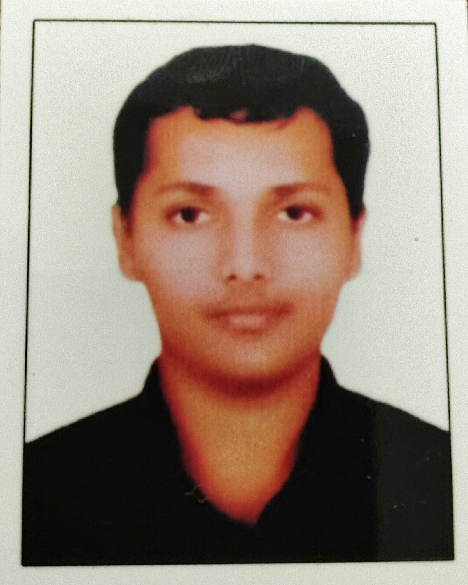

Adinath A D

Summary
Motivated and detail-oriented B.Tech student in Electrical and Electronics Engineering at College of Engineering Trivandrum, with strong foundations in programming, electronics, and AI/ML. Eager to leverage technical skills, innovative thinking, and project experience—such as developing AI-integrated assistive devices and smart home automation systems—to contribute to impactful engineering solutions. Seeking opportunities to grow as a developer and engineer in a dynamic, problem-solving environment.
Education
- Bachelor of Technology (B.Tech), Electrical and Electronics Engineering
College of Engineering Trivandrum, Kerala
Expected Graduation: 2028
- Senior Secondary (Class 12), Science Stream
Sai Krishna Public School, Chenkal
Year of Completion: 2024
Relevant Experience
Project Lead – Parammitra Mobility Solutions
College of Engineering Trivandrum
Jan 2025 – Present
- Led the development of Parammitra, an AI-integrated walking caliper designed to assist elderly and mobility-impaired individuals.
- Conducted market research, developed the business model, and contributed to prototyping and product design.
- Collaborated with a cross-functional team for an entrepreneurship and IPR initiative.
Skills
- Programming Languages:Python, C, C++, JavaScript, HTML, CSS
- Web Development: Front-end design, DOM manipulation, responsive UI, interactive apps
- Electronics & Embedded Systems: Circuit design, microcontrollers (e.g., Arduino), sensor integration, automation systems
- AI & Machine Learning: Basic model training, Python libraries (NumPy, pandas, scikit-learn)
- Tools & Platforms: Git, Overleaf (LaTeX), VS Code, Arduino IDE
- Soft Skills: Team collaboration, leadership, technical writing, public speaking, quiz competitions
Awards, Certifications & Achievements
- Winner – Philately Quiz
- Winner – Olympics Quiz
- Winner – 112 Days Long Quiz Competition
- Winner – Mastermind Quiz
- Top Performer in school-level literature, music, and rifle shooting events
- Project Recognition – Parammitra AI-integrated walking caliper selected for IPR and entrepreneurship initiative
Hobbies
Contact me